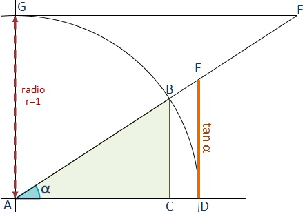
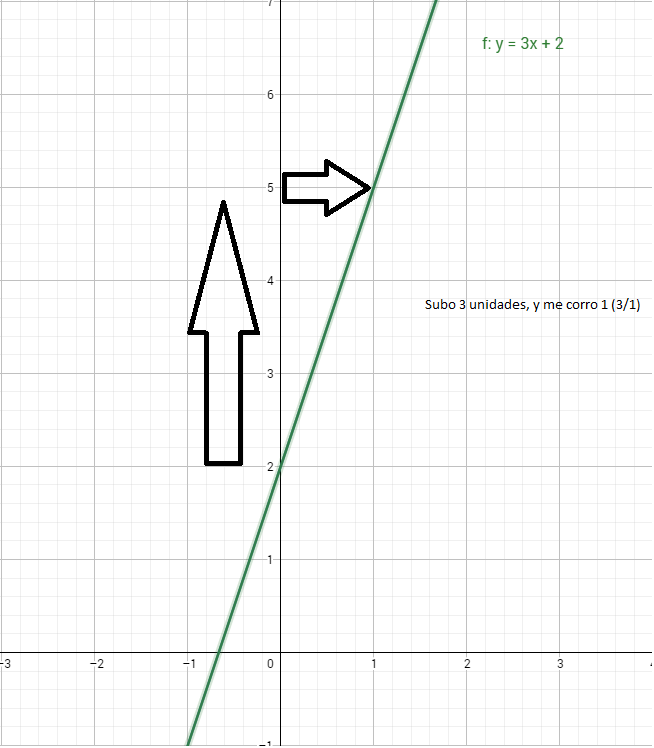
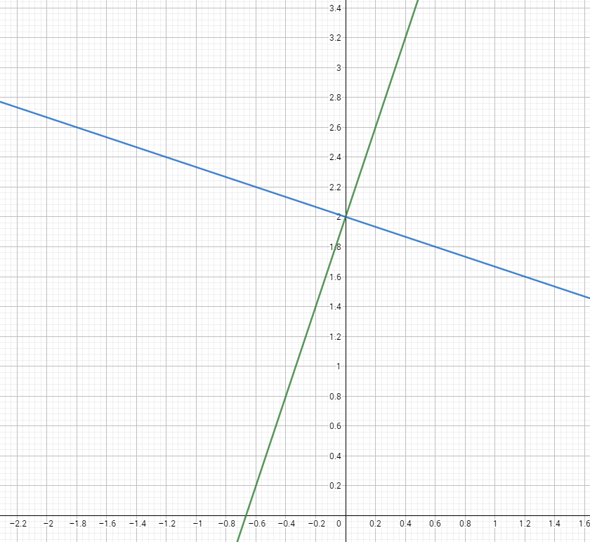
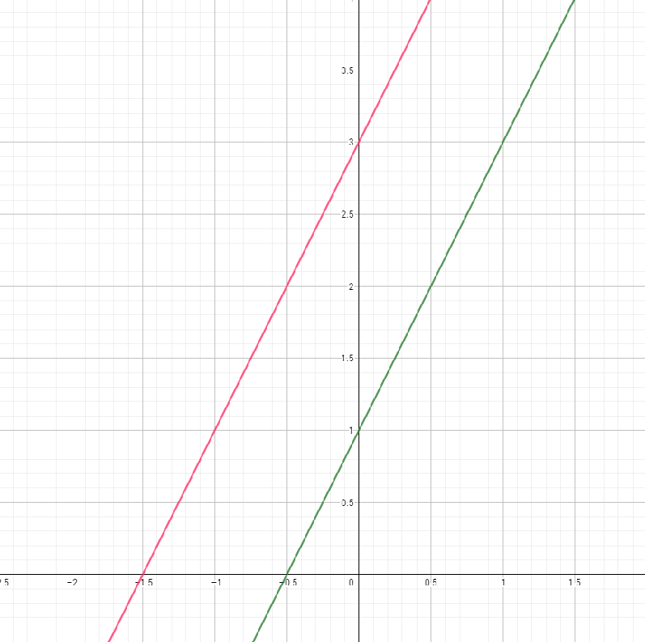

Funcion lineal
La función lineal es una de las funciones que más aplicaciones prácticas tiene en la vida diaria. Representa realciones directamente proporcionales o inversamente proporcionales (llamada pendiente $mx\)). Observemos que si X es 0, entonces b nos indica la intersección de la recta con el eje Y. A este punto se lo conoce como ordenada al orígen.
Cabe aclarar que esta función tambien puede conocerse como polinómica de grado 1, es decir:
\(bx^1\Rightarrow bx\)
Voy a dar por sentado por el momento que el lector posee conocimientos de teoría de conjuntos como así tambien de la inyectividad, biyectividad o sobreyectividad de las funciones que analizaremos
Para comenzar, podemos definirla de la siguiente manera:
\(f:\Re\Rightarrow\Re/f(x)=mx + b\)$m$ mide la pendiente de la recta, osea la tangente del ángulo $\alpha$ que se forma con el semieje de las abscisas.

Recordemos la definición de tangenete: opuesto sobre adyacente \(\tan(\alpha) = \frac{a}{b}\)
Posteriormente nos ocuparemos de las diversas aplicacioenes interesantes que tiene el uso de la trigonometría en las funcines lineales, muy útil, obviamente para el cálculo de áreas.
A continuación, tenemos el siguiente ejemplo:
\(f:\Re\Rightarrow\Re/f(x)=3x + 2\)Como vemos, la ordenada al orígen es \(b=2\) y la pendiente es \(m=3\) . La forma de graficar esta funcion puede ser:
- Por tabla de valores
- Analíticamente, es decir, calculando la raíz (donde corta al eje de las abscisas)
- Por definición trigonométrica
En nuestro caso utilizaremos el último y se procede de la siguiente forma: Se sabe que una recta se puede trazar con tan solo dos puntos en el plano, por lo tanto, nuestra función no escapa a la regla. Nuestro primer punto será (0;2), es decir, nuestra ordenada al orígen.
Posteriormente, para el segundo punto, tenemos la pendiente, y para ello nos posicionamos sobre la ordena al orígen y tomamos una unidad a la derecha y subimos 3 unidades, es decir, tenemos \(\frac{3}{1}\)

Como podemos ver, tenemos ahora dos puntos el \((0;2)\) y el \((1;5)\). Con los dos puntos, trazamos la recta en el sistema
Rectas perpendiculares y paralelas
Rectas perpendiculares
Para que existan dos rectas perpendiculares (simbolidazad \(\perp\)), se debe cumplir que: \(m2.m1=-1\)
Es decir: \(m2 = -\frac{1}{m1}\)
Dicho de otro modo, debe ser la inversa y además con el signo contrario de la pendiente orginal, veamos un ejemplo:
Sea: \(f(x)=3x+2\)
Su perpendicular será: \(m1=\frac{-1}{3}\)
>Por lo tanto, la recta perpendicular a \(f(x)=3x+2\) será \(g(x)=-\frac{1}{3}x+2\)

Cabe aclarar,que pueden tener, o no la misma ordenada al orígen
Rectas paralelas
Para el análisis de las rectas paralelas ($\\$)se debe cumplir simplemente la condición de que ambas tengan la misma pendiente y distinta ordenada al orígen. Por ejemplo:
Sea: \(f(x)=2x+1\) y \(g(x)=2x+3\)
Como \(m1=m2\) estamos en presencia de dos rectas paralelas. Veamos su gráfica:
